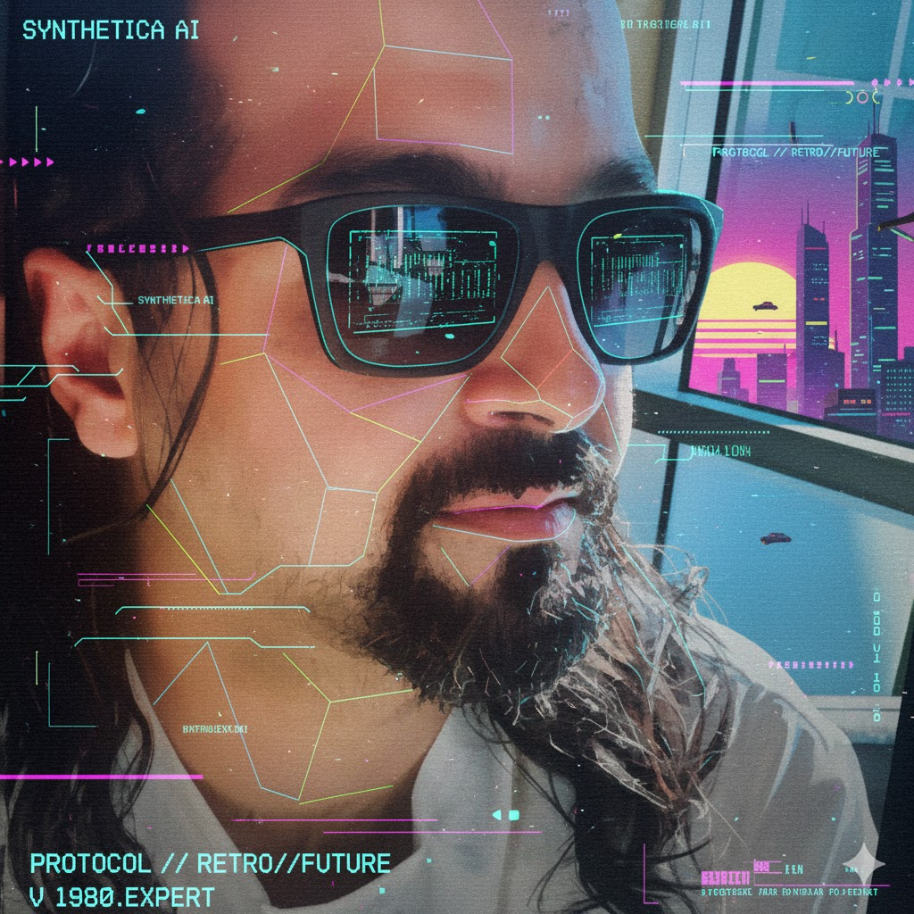
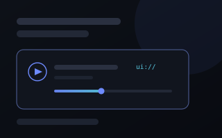
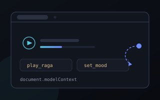

Ten years building web and mobile products, most recently at Amazon. I work where applied AI meets production front-end engineering — 29 shipped projects, 15 of them live.
Patent pending
A system that generates multimedia tailored to an individual — text, images, audio and video assembled per person rather than produced once for everyone — and distributes it across the devices that person already uses.
The same underlying pattern, per-person generative media delivered across a multi-device ecosystem, is now appearing in products across several industries worldwide. The application was filed before that convergence was widely visible.
Published and open to public inspection. Examination has not yet been requested and the application has not been granted.
Verify at the IP India registrySearch by application number 202611109533
I'm a seasoned full-stack developer with over a decade of experience building web and mobile applications. Currently working at Amazon in Cupertino, California, I specialize in creating innovative AI-powered solutions, educational platforms, and business tools.
My passion lies in leveraging cutting-edge technologies to solve real-world problems, with a particular focus on AI/ML integration, children's education, and e-commerce solutions. I've successfully deployed 15+ production applications and built a portfolio of 29+ projects spanning multiple domains.
Talking-head video generator: save a headshot and voice once, then create Quick or Cinematic videos in a chosen tone from just a topic.
AI agent that supports go-to-market work, helping research, plan and automate outreach for new products.
AI video studio for real estate agents: import a listing link and it writes the script, records the agent's voice, makes the video, runs quality checks and queues it for approval.
Kids clothing e-commerce platform with innovative AI-powered virtual try-on feature. Complete shopping experience with age-based filtering and newsletter integration.
AI-powered research platform combining Perplexity search with Grok AI visualizations. Comprehensive research capabilities with interactive components.
Signal pulled from LinkedIn — full text lives on the original post.
Two posts on giving an AI assistant real control of a real app, both built on Raga Radio — my mood-filtered Indian classical station.

Putting a radio inside a chat An assistant can tell you Raga Multani suits the late afternoon. It cannot give you a seek bar. Shipping real UI from an MCP server withui:// resources — and the CSP default that silently kills audio.

Driving a tab you already have open The radio is already playing and you are already signed in. Letting the page publish its own tools ondocument.modelContext so any agent in the browser can drive it.
Always keen to discuss micro-frontends, web components, AI tooling, or whatever interesting problem you're tackling. No sales pitches, just good tech banter.
Fair warning: I've got a full-time gig at Amazon, so no consulting work. But always up for interesting tech discussions and the occasional collaboration!
Send message